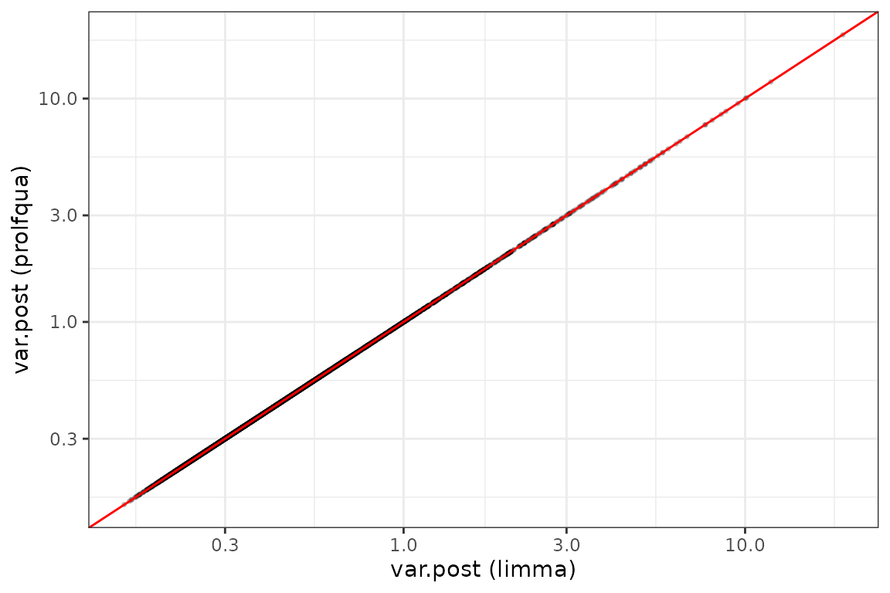
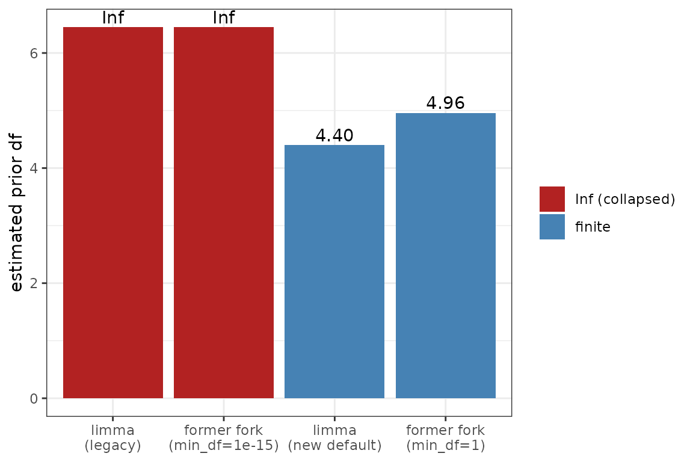

vignettes/SqueezeVar_comparison.Rmd
SqueezeVar_comparison.Rmdprolfqua used to ship its own empirical-Bayes
variance-moderation routine, squeezeVarRob(). The source
header records where it came from:
# Code from https://raw.githubusercontent.com/statOmics/MSqRob/master/R/squeezeVarRob.R
That is the old MSqRob package (the 2016-era
predecessor of msqrob2). It was never entirely clear
why MSqRob carried its own copy of a function that already
exists in limma. This vignette answers that empirically by
running the three implementations side by side:
limma::squeezeVar() — the reference
implementation.msqrob2 — the current Bioconductor package.prolfqua::squeezeVarRob() — the former prolfqua
backend, inherited from old MSqRob.Outcome. The benchmark in this vignette (synthetic + real IonStar spike-in data) shows the two estimators produce near-identical results, so
prolfquahas migrated its variance moderation tolimma::squeezeVar()(moderated_p_limma()as of prolfqua 1.6.3), and the vendoredsqueezeVarRob()has been removed. This vignette reconstructs its behaviour from limma primitives (limma::squeezeVar(legacy = TRUE)+ amin_dffilter) for the comparison below.
The short answer, established below:
msqrob2 does not have its own
implementation. It calls limma::squeezeVar()
directly, so it is limma.prolfqua::squeezeVarRob() was
limma’s classic (“legacy”) fitFDist plus one addition: a
min_df pre-filter (default 1) that
drops features whose residual degrees of freedom are
<= min_df before estimating the prior.df.prior = Inf, i.e. no moderation) when the data contain
many low / fractional-df features — exactly what peptide-level
robust/ridge regression produces. Modern limma fixed the same
problem upstream with a redesigned estimator (the
legacy argument), which is why msqrob2 needs
no patch.prolfqua, not
hypothetical. prolfqua feeds its variance
moderation the per-contrast residual df, and several of its estimators
produce fractional or low df: rlm and
rfit (df = sum of robust weights − rank),
lmer_nested (Satterthwaite df on peptide-level mixed
models), and the imputation facades (lm_impute /
lm_missing, with borrowed / low df). Only plain
lm gives integer df. So the behavioural difference between
the classic-plus-min_df fork and modern limma can
change prolfqua results on exactly those paths — it is not
merely historical. (firth and firth_nested are
not consumers — they use their own ContrastsFirth
inference, not squeezeVarRob.)msqrob2::msqrobLm() and
msqrob2::msqrobLmer() compute the moderated variance with a
plain call to limma::squeezeVar() (default arguments:
non-robust, no covariate):
body_lines <- deparse(getNamespace("msqrob2")$msqrobLm)
cat(body_lines[grep("squeezeVar", body_lines)[1] + 0:1], sep = "\n")## hlp <- limma::squeezeVar(var = vapply(models, getVar, numeric(1)),
## df = vapply(models, getDF, numeric(1)))So “the msqrob2 implementation” is
limma::squeezeVar(var, df). We keep it as a separate column
below only to make the three-way comparison explicit; it is identical to
the limma column by construction.
The former prolfqua::squeezeVarRob() was
removed in prolfqua 1.6.3, so we reproduce it here from
limma primitives — which is exactly what it was: limma’s
classic estimator (legacy = TRUE) plus
MSqRob’s min_df pre-filter (drop features with residual df
≤ min_df before estimating the prior, then apply the fitted
prior to all features).
recycle <- function(x, k) if (length(x) == 1L) rep(x, k) else x
# Exact reconstruction of the removed prolfqua::squeezeVarRob() (non-robust path).
former_fork <- function(var, df, min_df = 1) {
n <- length(var)
dfv <- recycle(df, n)
keep <- is.finite(dfv) & dfv > min_df
fit <- limma::squeezeVar(var[keep], df = dfv[keep], legacy = TRUE) # limma classic fitFDist
var.post <- if (is.infinite(fit$df.prior)) {
rep(fit$var.prior, n) # full collapse -> prior variance
} else {
(dfv * var + fit$df.prior * fit$var.prior) / (dfv + fit$df.prior)
}
list(df.prior = fit$df.prior, var.prior = fit$var.prior, var.post = var.post)
}
run_three <- function(var, df) {
n <- length(var)
lim <- limma::squeezeVar(var, df) # modern default -> what prolfqua now uses
msq <- limma::squeezeVar(var = var, df = df) # exactly the msqrob2 call
pro <- former_fork(var, df) # the removed squeezeVarRob fork
tibble::tibble(
df = df,
var = var,
varpost_limma = lim$var.post,
varpost_msqrob2 = msq$var.post,
varpost_prolfqua = pro$var.post,
dfprior_limma = recycle(lim$df.prior, n),
dfprior_prolfqua = recycle(pro$df.prior, n),
varprior_limma = recycle(lim$var.prior, n),
varprior_prolfqua = recycle(pro$var.prior, n)
)
}
# scaled-F generative model that the estimators assume:
# per-feature true variance sigma^2 ~ scaled inverse chi-square(df_prior, var_prior),
# observed sample variance ~ sigma^2 * chisq(df) / df.
gen_scaled_F <- function(n, df, df_prior = 4, var_prior = 0.4) {
sigma2 <- var_prior * df_prior / rchisq(n, df_prior)
sigma2 * rchisq(n, df) / df
}
summarise_cmp <- function(d) {
data.frame(
dfprior_limma = d$dfprior_limma[1],
dfprior_prolfqua = d$dfprior_prolfqua[1],
varprior_limma = d$varprior_limma[1],
varprior_prolfqua = d$varprior_prolfqua[1],
max_abs_varpost_diff = max(abs(d$varpost_limma - d$varpost_prolfqua)),
mean_rel_varpost_diff = mean(abs(d$varpost_limma - d$varpost_prolfqua) / d$varpost_limma),
msqrob2_equals_limma = isTRUE(all.equal(d$varpost_limma, d$varpost_msqrob2))
)
}The controlled baseline: 4000 features with integer df in
3:9, as produced by plain lm fits. This
establishes what the estimators do when they agree.
set.seed(7)
n <- 4000
df_int <- sample(3:9, n, replace = TRUE)
var_int <- gen_scaled_F(n, df_int)
cmp_int <- run_three(var_int, df_int)
knitr::kable(summarise_cmp(cmp_int), digits = 6,
caption = "Integer df: modern limma vs the former fork (msqrob2 == limma).")| dfprior_limma | dfprior_prolfqua | varprior_limma | varprior_prolfqua | max_abs_varpost_diff | mean_rel_varpost_diff | msqrob2_equals_limma |
|---|---|---|---|---|---|---|
| 4.071872 | 4.084128 | 0.400324 | 0.400162 | 0.020984 | 0.00045 | TRUE |
The posterior variances are indistinguishable (mean relative
difference < 1e-3). The former fork matches limma’s
legacy algorithm exactly here (all df > 1, so the
min_df filter is inert):
lg <- limma::squeezeVar(var_int, df_int, legacy = TRUE)
pr <- former_fork(var_int, df_int)
c(dfprior_limma_legacy = lg$df.prior,
dfprior_former_fork = pr$df.prior,
varprior_limma_legacy = lg$var.prior,
varprior_former_fork = pr$var.prior)## dfprior_limma_legacy dfprior_former_fork varprior_limma_legacy
## 4.0841281 4.0841281 0.4001621
## varprior_former_fork
## 0.4001621
ggplot(cmp_int, aes(varpost_limma, varpost_prolfqua)) +
geom_point(alpha = 0.2, size = 0.6) +
geom_abline(slope = 1, intercept = 0, colour = "red") +
scale_x_log10() + scale_y_log10() +
labs(x = "var.post (limma)", y = "var.post (prolfqua)") +
theme_bw()
Posterior variances agree on the diagonal (integer df, non-robust).
Robust and mixed-model fits produce fractional
residual df, and sparse fits produce low df. This is
the regime where the classic estimator misbehaves. We simulate df drawn
uniformly from [0.3, 4].
set.seed(7)
df_frac <- runif(n, 0.3, 4)
var_frac <- gen_scaled_F(n, pmax(df_frac, 0.3))
cat("features with df <= 1:", sum(df_frac <= 1), "of", n, "\n")## features with df <= 1: 793 of 4000
cmp_frac <- run_three(var_frac, df_frac)
knitr::kable(summarise_cmp(cmp_frac), digits = 6,
caption = "Fractional df: limma (modern default) vs prolfqua.")| dfprior_limma | dfprior_prolfqua | varprior_limma | varprior_prolfqua | max_abs_varpost_diff | mean_rel_varpost_diff | msqrob2_equals_limma |
|---|---|---|---|---|---|---|
| 4.400082 | 4.958392 | 0.41587 | 0.423477 | 0.896494 | 0.027585 | TRUE |
Here the two diverge. The reason is not merely the
min_df threshold — it is that the former fork was limma’s
classic estimator, while modern
limma::squeezeVar() defaults to a
redesigned one. We can expose all the moving parts:
show <- function(tag, x) {
data.frame(source = tag, df.prior = x$df.prior[1], var.prior = x$var.prior[1])
}
rbind(
show("limma default (new estimator)", limma::squeezeVar(var_frac, df_frac)),
show("limma legacy = TRUE (classic)", limma::squeezeVar(var_frac, df_frac, legacy = TRUE)),
show("former fork, min_df = 1e-15 (none)", former_fork(var_frac, df_frac, min_df = 1e-15)),
show("former fork, min_df = 1 (default)", former_fork(var_frac, df_frac))
)## source df.prior var.prior
## 1 limma default (new estimator) 4.400082 0.4158703
## 2 limma legacy = TRUE (classic) Inf 0.7278426
## 3 former fork, min_df = 1e-15 (none) Inf 0.7278426
## 4 former fork, min_df = 1 (default) 4.958392 0.4234774Two exact identities fall out of this table:
min_df = 1e-15 ==
limma(legacy = TRUE) — both return
df.prior = Inf. This confirms the former
squeezeVarRob() was limma’s classic
fitFDist. On this fractional data the classic estimator
collapses to df.prior = Inf: no shrinkage,
every feature falls back to a pooled variance. That is the failure mode
MSqRob hit.min_df = 1 (the
shipped default) recovers a sensible finite df.prior by
excluding the <= 1-df features from the prior fit. That
is precisely the patch MSqRob added.limma (default) also recovers a
sensible df.prior, but via its new algorithm rather than a
df filter.
dfp <- data.frame(
method = factor(
c("limma\n(new default)", "limma\n(legacy)", "former fork\n(min_df=1e-15)", "former fork\n(min_df=1)"),
levels = c("limma\n(legacy)", "former fork\n(min_df=1e-15)", "limma\n(new default)", "former fork\n(min_df=1)")),
df.prior = c(limma::squeezeVar(var_frac, df_frac)$df.prior,
limma::squeezeVar(var_frac, df_frac, legacy = TRUE)$df.prior,
former_fork(var_frac, df_frac, min_df = 1e-15)$df.prior,
former_fork(var_frac, df_frac)$df.prior)
)
dfp$label <- ifelse(is.finite(dfp$df.prior), sprintf("%.2f", dfp$df.prior), "Inf")
dfp$plot_val <- ifelse(is.finite(dfp$df.prior), dfp$df.prior, max(dfp$df.prior[is.finite(dfp$df.prior)]) * 1.3)
ggplot(dfp, aes(method, plot_val, fill = is.finite(df.prior))) +
geom_col() +
geom_text(aes(label = label), vjust = -0.3) +
scale_fill_manual(values = c(`TRUE` = "steelblue", `FALSE` = "firebrick"),
labels = c(`TRUE` = "finite", `FALSE` = "Inf (collapsed)"), name = NULL) +
labs(x = NULL, y = "estimated prior df") +
theme_bw()
Estimated prior df on fractional-df data: classic limma collapses to Inf; the min_df patch and modern limma both recover a finite value.
There is a single call site in prolfqua:
moderated_p_limma() (in tidyMS_moderation.R),
which squeezes the per-contrast residual variances. It now calls
limma::squeezeVar() (the migration this vignette
justifies); it previously called the vendored
squeezeVarRob():
# current (prolfqua >= 1.6.3)
squeezed_var <- limma::squeezeVar(contrast_df$sigma^2, df = contrast_df[[df]], robust = robust)
# former
# squeezed_var <- prolfqua::squeezeVarRob(contrast_df$sigma^2, df = contrast_df[[df]], robust = robust)
# prior degrees of freedom are Inf
if (all(is.infinite(squeezed_var$df.prior))) {
squeezed_var$df.prior <- mean(contrast_df[[df]]) * nrow(contrast_df) / 10
}The fallback on the second line is itself evidence:
prolfqua already has to catch the
df.prior = Inf collapse on real data.
moderated_p_limma() is called by
ContrastsModerated (the moderated-Wald path wrapping
lm, rlm, rfit, the
lm_impute / lm_missing /
rfit_impute facades, and lmer_nested) and by
the DEqMS small-group fallback.
The df column fed in is the per-contrast residual df,
and it is not integer for several estimators:
rlm, rfit — the robust
residual df is sum(robust weights) − rank; the weights lie
in (0, 1], so the df is fractional.lmer_nested — the contrast df is the
Satterthwaite denominator df from
lmerTest::contest(), fractional and, on
peptide-level nested models, often small.lm_impute / lm_missing /
rfit_impute — residual df can be low or
borrowed when groups are (partly) imputed, where the
min_df = 1 filter changes which features enter the prior
fit.lm — integer residual df; the only
path that stays in Regime 1.(firth / firth_nested do
not feed squeezeVarRob — they use their
own ContrastsFirth inference. Likewise limma*
uses limma’s own eBayes, and limpa its own
moderation.)
A quick check that rlm really produces fractional
df:
set.seed(1)
x <- rnorm(12); y <- 2 * x + rnorm(12); y[3] <- y[3] + 8 # inject one outlier
m <- MASS::rlm(cbind(1, x), y)
c(rank = m$rank, sum_weights = sum(m$w), rlm_df_residual = sum(m$w) - m$rank)## rank sum_weights rlm_df_residual
## 2.00000 9.57977 7.57977So the classic-vs-modern difference shown above is reachable in
ordinary prolfqua usage — rlm /
rfit and lmer_nested on peptide-level data,
and the imputation facades — not only in a synthetic peptide-ridge
scenario.
Putting the pieces together:
fitFDist /
squeezeVar and added a min_df
guard.< 1. On such data, limma’s estimator of
that era collapsed to df.prior = Inf — effectively
switching moderation off and returning pooled variances. Dropping the
<= min_df features before the prior fit restores a
usable, finite prior df.legacy argument; default
legacy = NULL selects the new estimator for non-integer df)
handles fractional df robustly on its own. msqrob2
therefore dropped the custom code and simply calls
limma::squeezeVar().prolfqua the fork is still doing
work. prolfqua inherited the classic estimator
plus the min_df patch and applies it to rlm /
rfit (fractional df), lmer_nested (fractional
Satterthwaite df), and the imputation facades (low / borrowed df) —
precisely the regime where classic limma collapses. The
min_df filter is what keeps those paths from falling back
to unmoderated pooled variances (with a further explicit
Inf-collapse guard in moderated_p_limma()). It
only leaves lm unaffected.The algorithm analysis above shows the fork and modern limma diverge on fractional-df paths. Whether that divergence matters for real conclusions is an empirical question. Both backends were run through the same models, contrasts and downstream statistics — only the squeeze backend varied — on two data sources:
prolfquadata, PXD003881): E. coli (true
positives) spiked into a constant human background (true negatives);
4178 proteins, 4 dilution contrasts.Three moderated facades were compared, spanning the df regimes:
lm (integer df), rlm (robust, fractional df)
and lmer_nested (peptide-level mixed model, fractional
Satterthwaite df). Results are cached in the package (fitting IonStar
lmer_nested on all proteins is too slow to run at build
time).
bench_file <- system.file("extdata", "squeezeVar_benchmark.rds", package = "prolfquabenchmark")
if (!nzchar(bench_file)) {
# dev / build-time fallback: vignettes/ sits next to inst/
alt <- file.path("..", "inst", "extdata", "squeezeVar_benchmark.rds")
if (file.exists(alt)) bench_file <- alt
}
bench <- if (nzchar(bench_file) && file.exists(bench_file)) readRDS(bench_file) else NULLOn real IonStar data, rlm and lmer_nested
feed overwhelmingly fractional df into the squeeze, while
lm stays integer — so any classic-vs-modern difference is
exercised, not hypothetical:
if (!is.null(bench)) knitr::kable(bench$ionstar$df_regime, caption = "IonStar: residual df fed into the squeeze, by method.")| method | pct_fractional_df | median_df | min_df | |
|---|---|---|---|---|
| lm | lm | 0 | 15.0 | 0.00 |
| rlm | rlm | 95 | 13.8 | -1.00 |
| lmer_nested | lmer_nested | 100 | 17.7 | 0.99 |
if (!is.null(bench)) knitr::kable(bench$ionstar$metrics,
caption = "IonStar @ BH q <= 0.05. AUC = ranking; FDP_at_0.05 = observed false-discovery proportion (E.coli/HUMAN truth); power = fraction of E.coli called.")| method | backend | AUC | pAUC10 | FDP_at_0.05 | power | n_called | |
|---|---|---|---|---|---|---|---|
| lm current_squeezeVarRob 0.05 | lm | squeezeVarRob (former) | 0.896 | 0.831 | 0.035 | 0.465 | 1198 |
| lm modern_limma 0.05 | lm | limma::squeezeVar (current) | 0.896 | 0.831 | 0.037 | 0.467 | 1203 |
| lmer_nested current_squeezeVarRob 0.05 | lmer_nested | squeezeVarRob (former) | 0.883 | 0.815 | 0.016 | 0.357 | 879 |
| lmer_nested modern_limma 0.05 | lmer_nested | limma::squeezeVar (current) | 0.882 | 0.814 | 0.012 | 0.348 | 852 |
| rlm current_squeezeVarRob 0.05 | rlm | squeezeVarRob (former) | 0.905 | 0.829 | 0.097 | 0.530 | 1458 |
| rlm modern_limma 0.05 | rlm | limma::squeezeVar (current) | 0.905 | 0.829 | 0.100 | 0.539 | 1488 |
if (!is.null(bench)) knitr::kable(bench$ionstar$concordance,
caption = "IonStar: agreement of significance calls (q <= 0.05) between the two backends.")| method | n_contrasts | pct_calls_concordant | calls_changed | median_abs_dq | |
|---|---|---|---|---|---|
| lm | lm | 16439 | 99.97 | 5 | 0.0024 |
| rlm | rlm | 16408 | 99.82 | 30 | 0.0051 |
| lmer_nested | lmer_nested | 15920 | 99.73 | 43 | 0.0101 |
AUC is identical to three decimals, the observed false-discovery
proportion tracks the same value for both backends, and ≥ 99.7%
of significance calls are identical — only 5 (lm),
30 (rlm) and 43 (lmer_nested) of ~16,000
protein×contrast calls flip when switching backends.
if (!is.null(bench)) knitr::kable(bench$synthetic$metrics, digits = 3,
caption = "Synthetic, mean over 30 replicates @ BH q <= 0.05.")| scenario | method | backend | AUC | FDP_at_0.05 | power | n_reps |
|---|---|---|---|---|---|---|
| low_df | lm | squeezeVarRob (former) | 1.000 | 0.052 | 0.995 | 30 |
| low_df | lm | limma::squeezeVar (current) | 1.000 | 0.061 | 0.998 | 30 |
| low_df | lmer_nested | squeezeVarRob (former) | 0.853 | 0.646 | 0.870 | 30 |
| low_df | lmer_nested | limma::squeezeVar (current) | 0.855 | 0.637 | 0.861 | 30 |
| low_df | rlm | squeezeVarRob (former) | 0.994 | 0.198 | 0.984 | 30 |
| low_df | rlm | limma::squeezeVar (current) | 0.994 | 0.170 | 0.982 | 30 |
| moderate | lm | squeezeVarRob (former) | 1.000 | 0.042 | 0.999 | 30 |
| moderate | lm | limma::squeezeVar (current) | 1.000 | 0.046 | 0.999 | 30 |
| moderate | lmer_nested | squeezeVarRob (former) | 0.880 | 0.700 | 0.946 | 30 |
| moderate | lmer_nested | limma::squeezeVar (current) | 0.879 | 0.698 | 0.944 | 30 |
| moderate | rlm | squeezeVarRob (former) | 1.000 | 0.118 | 0.997 | 30 |
| moderate | rlm | limma::squeezeVar (current) | 1.000 | 0.111 | 0.997 | 30 |
The synthetic replicates agree with IonStar: AUC, power and FDP are
near-identical between backends in every cell. (The synthetic
lmer_nested FDP is inflated for both backends
because sim_lfq_data’s peptide mode redraws peptide
baselines per group — an anti-conservative simulator artifact that
cancels in the backend-vs-backend comparison; the real IonStar FDP above
is the calibration-trustworthy number.)
| Implementation | What it is | Status |
|---|---|---|
limma::squeezeVar() (default) |
modern reference estimator; handles fractional df natively | what prolfqua now uses |
msqrob2 |
calls limma::squeezeVar(var, df)
|
identical to limma |
prolfqua::squeezeVarRob() (former) |
limma classic fitFDist +
min_df filter (from MSqRob) |
removed from prolfqua |
The fork and modern limma agree on the integer-df (lm)
path and diverge algorithmically on the fractional/low-df paths
(rlm / rfit, lmer_nested,
imputation facades) — but the benchmark shows that divergence is
immaterial to conclusions: identical AUC, maintained
FDR calibration, and ≥ 99.7% identical calls on gold-standard spike-in
data.
Because modern limma::squeezeVar() solves the same
fractional-df collapse without the min_df heuristic — and
is actively maintained, whereas the fork was a static 2016 copy —
prolfqua migrated its variance moderation to
limma::squeezeVar()
(moderated_p_limma(), prolfqua 1.6.3), and the vendored
squeezeVarRob() has been removed. This vignette is the
evidence behind that decision.
## R version 4.6.1 (2026-06-24)
## Platform: x86_64-pc-linux-gnu
## Running under: Ubuntu 24.04.4 LTS
##
## Matrix products: default
## BLAS: /usr/lib/x86_64-linux-gnu/openblas-pthread/libblas.so.3
## LAPACK: /usr/lib/x86_64-linux-gnu/openblas-pthread/libopenblasp-r0.3.26.so; LAPACK version 3.12.0
##
## locale:
## [1] LC_CTYPE=C.UTF-8 LC_NUMERIC=C LC_TIME=C.UTF-8
## [4] LC_COLLATE=C.UTF-8 LC_MONETARY=C.UTF-8 LC_MESSAGES=C.UTF-8
## [7] LC_PAPER=C.UTF-8 LC_NAME=C LC_ADDRESS=C
## [10] LC_TELEPHONE=C LC_MEASUREMENT=C.UTF-8 LC_IDENTIFICATION=C
##
## time zone: UTC
## tzcode source: system (glibc)
##
## attached base packages:
## [1] stats graphics grDevices utils datasets methods base
##
## other attached packages:
## [1] ggplot2_4.0.3 prolfqua_1.7.0 limma_3.68.4
##
## loaded via a namespace (and not attached):
## [1] RColorBrewer_1.1-3 jsonlite_2.0.0
## [3] shape_1.4.6.1 MultiAssayExperiment_1.38.0
## [5] magrittr_2.0.5 jomo_2.7-6
## [7] farver_2.1.2 logistf_1.26.1
## [9] nloptr_2.2.1 rmarkdown_2.31
## [11] GlobalOptions_0.1.4 fs_2.1.0
## [13] ragg_1.5.2 vctrs_0.7.3
## [15] minqa_1.2.8 htmltools_0.5.9
## [17] S4Arrays_1.12.0 forcats_1.0.1
## [19] broom_1.0.13 SparseArray_1.12.2
## [21] mitml_0.4-5 sass_0.4.10
## [23] bslib_0.12.0 htmlwidgets_1.6.4
## [25] desc_1.4.3 plyr_1.8.9
## [27] plotly_4.12.1 cachem_1.1.0
## [29] igraph_2.3.3 lifecycle_1.0.5
## [31] iterators_1.0.14 pkgconfig_2.0.3
## [33] Matrix_1.7-5 R6_2.6.1
## [35] fastmap_1.2.0 rbibutils_2.4.1
## [37] MatrixGenerics_1.24.0 clue_0.3-68
## [39] digest_0.6.39 colorspace_2.1-3
## [41] S4Vectors_0.50.1 textshaping_1.0.5
## [43] GenomicRanges_1.64.0 labeling_0.4.3
## [45] httr_1.4.8 abind_1.4-8
## [47] mgcv_1.9-4 compiler_4.6.1
## [49] withr_3.0.3 doParallel_1.0.17
## [51] S7_0.2.2 backports_1.5.1
## [53] BiocParallel_1.46.0 UpSetR_1.4.1
## [55] pan_2.0 MASS_7.3-65
## [57] DelayedArray_0.38.2 rjson_0.2.23
## [59] tools_4.6.1 otel_0.2.0
## [61] nnet_7.3-20 glue_1.8.1
## [63] nlme_3.1-169 QFeatures_1.22.0
## [65] grid_4.6.1 cluster_2.1.8.2
## [67] reshape2_1.4.5 generics_0.1.4
## [69] operator.tools_1.6.3.1 gtable_0.3.6
## [71] formula.tools_1.7.1 tidyr_1.3.2
## [73] data.table_1.18.4 XVector_0.52.0
## [75] BiocGenerics_0.58.1 ggrepel_0.9.8
## [77] foreach_1.5.2 pillar_1.11.1
## [79] stringr_1.6.0 circlize_0.4.18
## [81] splines_4.6.1 dplyr_1.2.1
## [83] lattice_0.22-9 survival_3.8-6
## [85] tidyselect_1.2.1 ComplexHeatmap_2.28.0
## [87] knitr_1.51 reformulas_0.4.4
## [89] gridExtra_2.3.1 IRanges_2.46.0
## [91] Seqinfo_1.2.0 ProtGenerics_1.44.0
## [93] SummarizedExperiment_1.42.0 stats4_4.6.1
## [95] xfun_0.60 Biobase_2.72.0
## [97] statmod_1.5.2 matrixStats_1.5.0
## [99] stringi_1.8.9 lazyeval_0.2.3
## [101] yaml_2.3.12 boot_1.3-32
## [103] evaluate_1.0.5 codetools_0.2-20
## [105] MsCoreUtils_1.24.0 tibble_3.3.1
## [107] cli_3.6.6 rpart_4.1.27
## [109] systemfonts_1.3.2 Rdpack_2.6.6
## [111] jquerylib_0.1.4 Rcpp_1.1.2
## [113] msqrob2_1.20.0 png_0.1-9
## [115] parallel_4.6.1 pkgdown_2.2.1
## [117] assertthat_0.2.1 AnnotationFilter_1.36.0
## [119] lme4_2.0-6 glmnet_5.0
## [121] viridisLite_0.4.3 scales_1.4.0
## [123] purrr_1.2.2 crayon_1.5.3
## [125] GetoptLong_1.1.1 rlang_1.3.0
## [127] mice_3.19.0